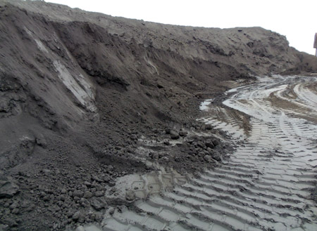
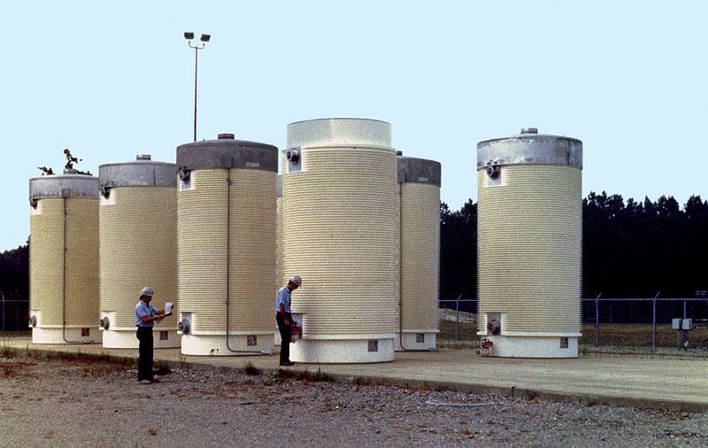

WRONG!
Correct Answer - Fly ash produced by Coal power plants
Coal has radioactive uranium and thorium in trace amounts. When coal is burned into fly ash, uranium and thorium are concentrated at up to 10 times their original levels and leach into the soil and water surrounding a coal plant. In fact, fly ash carries about 100 times more radiation in the surrounding environment than a nuclear power plant producing the same amount of energy. Source - www.scientificamerican.com
The Nuke Quiz #2
Question 4
Which of these is a greater contributor of radiation to the environment?

